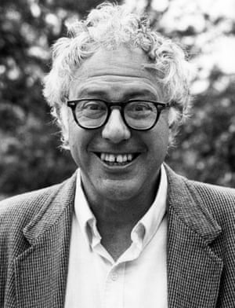

BERNIE VS TRUMP
Home | Why Bernie? | Facts | Bernie vs Trump | Pics of Bernie | Green New Deal | Accomplishments | Medicare for ALL

Pros of Bernie:
On the pro side of the ledger, he's got the enlightened view shared by the rest of the wealthy democratic world with regard to social programs. I can't think of another American politician who champions these ideas to the extent he does. He's also got a solid track record on being anti-war and pro-civil rights. Plus, he isn't a loon. He's unique in American politics, but most of what he's advocating are tried and true policies which are in use all over the world. A Sanders administration might begin to bring the US into the modern age of government. He's also a Jew. And while not very religious, it would be a positive thing for American diversity to have the first non-Christian president under our belts. He also has something that Donald Trump has: authenticity. His message is decidedly antiestablishment and populist. In a political landscape dominated by the deepest of deep pockets, senator Sanders isn't for sale. You can hear it when he speaks and his presidency would be a breath of fresh air for average Americans. Medicare-for-all, an expansion of LBJ’s Great Society legislation. A Green New Deal, to tackle climate change and spur innovation in the environmental sector. There are concerns about the costs of these plans, namely Sanders’ healthcare plan. Sanders has promoted a single-payer universal healthcare system. An overhaul of the current Medicare/Medicaid system, Sanders’ plan has been described by others as the “gold standard” plan. Currently, 55 million Americans are without health insurance or are underinsured. In a universal plan, none would be exempt from coverage. Estimates on the cost of this keynote program range from $20 trillion to $30 trillion over the course of ten years. One Yale study showed Bernie’s plan saving taxpayers billions in the long term. On the other hand, Bernie presents a progressive tax plan which includes an approximately 50 percent marginal tax rate on annual incomes over $2 million. What’s more is his vision to reallocate tax revenue burdens from workers onto private elites with taxes and a $15 federal minimum wage. While the increase would be better suited for big businesses e.g. Amazon, and yes small businesses will have to adjust their operations. Fortunately, a strong minimum wage would institute an end to illegal alien employment and increase the minimum wages of workers on the whole. Regarding Puerto Rico, how can their local sugar economy withstand hurricane after hurricane? Bernie’s vigilant emphasis on climate change would make an 80-year-old President Sanders the most progressive advocate for environmentalism in American history.
Cons of Bernie:
On the negative side of the ledger, he's old. Although he seems full of vitality and mental acuity, he would be the oldest president ever elected to office. His chances of dying in office, presuming he won a second term as most presidents do, is not insignificant. He's also an idealist whose ideals might doom his candidacy. Like it or not, American politics is dominated by money. He has refused to take money from the deepest pockets and thus will be outspent a hundredfold by his opponent and likely will lose as a result. Given this reality, it's hard to see voting for him as anything more than a protest or "throwaway" vote. His big-ticket issue is Medicare for All, a single-payer public healthcare system that covers all U.S. residents, including undocumented immigrants. He has argued that the program would actually save billions of dollars in the long run, along with tens of thousands of lives. This assumption is based on a recent study by Yale researchers published in the Lancet, which found that his plan would reduce national health spending from $52 trillion over a decade to $47 trillion. While the actual price tag of the program has been a point of contention for many, the Lancet paper offers the lowest possible cost estimate. Sanders’ $30 trillion in projected federal spending also includes funding for the National Institutes of Health, Centers for Disease Control and Prevention and more. This money can’t be spent on Medicare for All unless the budgets for these essential public-health agencies are cut to zero. However, nitpicking the financial details of his Medicare for All plan is almost pointless. His proposal only has 14 co-sponsors in the Senate, which isn’t even a majority of Democrats. It’s less than a third of the 60 votes required to overcome a filibuster and pass major legislation. Another problematic proposal from Sanders is a $15 federal minimum wage. While the $7.25 minimum is demonstrably lacking and hasn’t been properly adjusted for inflation, a $15 minimum would end up costing jobs for people in poorer areas. For example, the median hourly wage in Puerto Rico is about $10. Raising the minimum wage by 50 percent of the median wage would decimate the local economy, resulting in inflated prices and lost jobs. This would drastically impact states like Mississippi, where the median hourly wage is also below $15.
Pros of Trump:
there arent any.... moving on
Cons of Trump:
Con No. 1: To borrow billions, Trump lies to inflate his net worth.
As Trump’s power has grown, his lies have become bolder and more apparent. Early in his career, however, when Trump first conned me into putting him on the Forbes 400 list and then deceived financial institutions to loan him billions of dollars based upon a vastly exaggerated net worth, his deceptions were more elaborate and difficult to track. As recounted in The Washington Post last year, Trump fed me carefully crafted false information for years. This included two long phone interviews in which Trump pretended to be a nonexistent assistant named John Barron, as well as his having his notorious fixer Roy Cohn call me at Forbes in 1982 and 1983 to lie on his behalf. Trump was consistent in maintaining the lies he told Forbes: that he controlled his father’s assets, that his family owned 25,000 apartments (they owned less than half that number), and that his projects had less debt and far more profits than they actually did — all facts and figures that were hard to challenge. Anyone who listens to the two 40-minute telephone recordings I made in 1984 of the man who Trump’s secretary said was the Trump Organization’s “VP of Finance John Barron” can easily recognize Trump’s thinly disguised voice. Some critics wondered how stupid I had been not to have seen through this ruse. Yet even the most seasoned journalist could not have imagined a prominent figure doing what nobody had, as far as I am aware, dared to do before or since: impersonate a nonexistent spokesman on the phone to national media. The failure of our imagination to respond to Trump remains true to this day. It is not that we underestimate his capacity as a businessman, candidate or president of the United States. It is that we cannot imagine — and are unprepared to respond to — anyone who lies and cons as shamelessly and effectively as he does. Trevor Noah of “The Daily Show” framed Trump’s Forbes 400 scam as his “origin lie,” the foundation he built his entire career on. That’s because, as Tim O’Brien wrote in his book “TrumpNation”: “The more often Forbes mentioned him, the more credible Donald’s claim to vast wealth became. … The more credible his claim to vast wealth became, the easier it was for him to get on the Forbes 400 — which became the standard that other media, and apparently some of the country’s biggest banks, used when judging Donald’s riches.” It is hard to imagine that financial institutions would extend $3 billion in loans to Trump’s Atlantic City and New York real estate projects based on his inflated asset statements and Forbes 400 listing without insisting on audited financial statements that demonstrated exactly how much cumulative debt he was on the hook for. Yet during the eight years after he first conned his way onto the list, this appears to be exactly what happened. As with all great con men, Trump is as skilled in the art of deception as he is in the art of promotion. He made certain that nobody could definitively counter his inflated-wealth con by ensuring that a comprehensive balance sheet was never created. As The Post’s Michael Kranish and Marc Fisher wrote in their book “Trump Revealed,” Trump, in 1990, brought in Steve Bollenbach as chief financial officer to respond to lender concerns about his crippling debt. They report: “When Bollenbach began delving into the organization’s finances, he got a surprise. The small staff on the twenty-sixth floor of Trump Tower included three accountants. Each knew about pieces of the fraying empire — the casinos, for instance, or the condos. But no one knew the overall picture; there were no consolidated financial reports.” This was deliberate. And despite multiple bankruptcies, Trump’s inflated-worth ruse remained at the center of his image as a successful businessman, a billionaire able to play the part of a brilliant tycoon on “The Apprentice” reality show and capable of licensing his name for millions of dollars. Although Trump has threatened to sue reporters many times, the only time he followed through with a libel suit was in 2006, after O’Brien, in “TrumpNation,” reported that three experts close to Trump believed his true net worth to be between $150 million and $250 million — far from the $6 billion he claimed he was worth at the time. Trump lost the suit, appealed the ruling, then lost the appeal in 2011. This was the same year he again demonstrated how important his illusory billionaire status was to him. As noted in “Trump Revealed,” while cooperating with a Comedy Central “roast” of him, Trump insisted that the show’s comedians agree to keep only one subject off-limits. “Don’t say I have less money than I say I do,” Trump insisted, according to comedian Anthony Jeselnik. “Make fun of my kids, do whatever you want. Just don’t say that I don’t have that much money.”
Con No. 2: To avoid taxes, Trump lies to deflate his net worth.
The only people Trump ever wanted to convince that he had less money than he did were those who worked for the Internal Revenue Service. And somehow, despite his inflated public claims of income and valuations, he managed to do just that. Last year, the New York Times published the results of a painstakingly researched investigation into Trump’s tax dodges. The article stated: “President Trump participated in dubious tax schemes during the 1990s, including instances of outright fraud, that greatly increased the fortune he received from his parents … He and his siblings set up a sham corporation to disguise millions of dollars in gifts from their parents … He also helped formulate a strategy to undervalue his parents’ real estate holdings by hundreds of millions of dollars on tax returns, sharply reducing the tax bill when those properties were transferred to him and his siblings. … The president’s parents, Fred and Mary Trump, transferred well over $1 billion in wealth to their children, which could have produced a tax bill of at least $550 million under the 55 percent tax rate then imposed on gifts and inheritances.” Instead, the Times reported, “the Trumps paid a total of $52.2 million, or about 5 percent.” Virtually every aspect of the Trump family empire operated like a tax evasion scheme. According to the Times, over the years, 295 separate revenue streams were created for Fred Trump to evade gift and income taxes while directing money to his children. Donald Trump not only managed to deflate the value of his family’s assets for tax purposes, but in a con that probably goes unrivaled in American tax-dodging history, from at least 1996 onward, he reportedly erased personal income taxes he would have otherwise paid from profitable ventures like his “Apprentice” TV show. How? He used the whopping $916 million loss of the money that had come from the lenders who had backed his casinos. Over the next 15 years, Trump was able to pay no income taxes on this loss of $916 million in other people’s money.
Con No. 3: To be a winner, Trump makes losers of those he does business with.
To make every business deal with him sound sweeter than it was, Trump marketed his name as synonymous with gold-plated luxury. But few of his deals had happy endings. His narcissistic need to be a winner every time meant that there were losers every time. This included just about anyone who made the mistake of signing a contract to lend or partner or supply goods or services to him. After stiffing his partners and lenders in Atlantic City in 1991 by declaring bankruptcy and forcing them to write down billions of dollars in losses, Trump soon retook control of the properties by creating a public casino company in 1995 and selling the stock to suckers attracted to his name. According to a MarketWatch columnist, “Donald Trump was a stock market disaster,” with Trump Hotels and Casino Resorts racking up more than $1 billion in losses during his 13 years as chairman, while its stock fell from a high of $35 to just 17 cents. But despite making losers of the poor saps who invested with him, Trump emerged a winner, soaking the bankrupted public company for what Fortune magazine estimated was $82 million in compensation.
Trump has bragged: “Does anyone know more about litigation than Trump? I’m like a PhD in litigation.” Unlike all the other things Trump says he knows more about than anybody, this one has a morsel of truth to it. While most Americans expect to do what they promise in a signed contract, Trump sees contracts as mere jumping-off points for “negotiation.” Knowing that litigation is costly and can drag on for years, Trump’s business modus operandi for stiffed contractors has been, “You can negotiate with my lawyers for a settlement or sue me and see how long that takes!” An analysis by USA Today published in June 2016 found that during the previous 30 years, Trump and his businesses have been involved in 3,500 state and federal legal cases.
Understanding special counsel Robert S. Mueller III’s investigation and Trump’s long relationship with Vladimir Putin’s Russia begins with recognizing that Trump has among the worst reputations of any businessperson in America. As investigative journalist Craig Unger explained in “House of Trump, House of Putin,” after burning so many major financial institutions by losing more than $3 billion in Atlantic City and overpriced New York properties, Putin’s “oligarchs and Mafia kingpins” were some of the only investors willing to do business with Trump, through untraceable offshore entities. Unger wrote that Trump’s real estate was “used as a vehicle that likely served to launder enormous amounts of money — perhaps billions of dollars — for the Russian Mafia for more than three decades.”